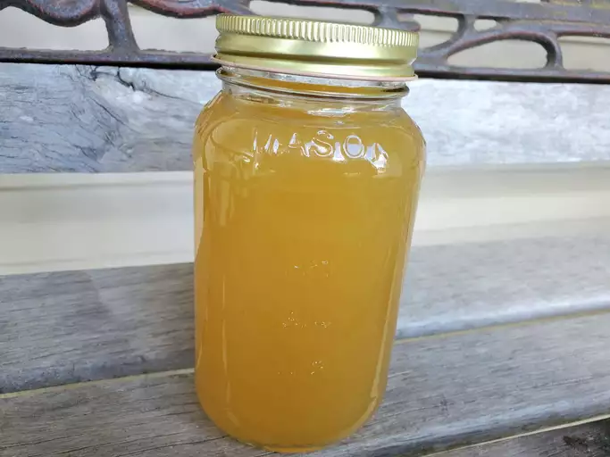

Chicken_broth

Chicken broth might be one of the more basic dishes, but do not think of it as crappy food.
You easily can add vegetables and pasta to modify the dish up to your appetite, while tasting great!
Ingridients
- 2 medium rotisserie chicken carcasses
- 8 cups of water
- 2 medium carrots, cut into large chungs
- 2 large stalks celery, cut into large chunks
- 1 large onion, cut into large chunks
- 1/2 cup fresh spinach
- 2 teaspoons salt
Steps
- Put chicken carcasses, water, carrors, celery,
onion, spinach, and salt into large pot
- Bring the pot to a boil
- Reduce heat and simmer for 25 minutes